Infratemporal Fossa
Structures inside the Temporal fossa:
- Temporal muscle
- Temporal fascia (overlies the temporalis muscle)
- Superficial temporal artery (br. of external carotid)
- Superficial temporal vein (unites with the maxillary vein to form the retromandibular vein)
- Auriculotemporal nerve (br. of mandibular nerve which is a br of the trigeminal nerve)
- A knowledge of the anatomy of the infratemporal and pterygopalatine fossae and their contents is essential for understanding the dental region.
- Many of the nerves and blood vessels supplying the structures of the mouth run through or close to these fossae.
-
In addition, the infratemporal fossa contains the pterygoid muscles which play an important part in
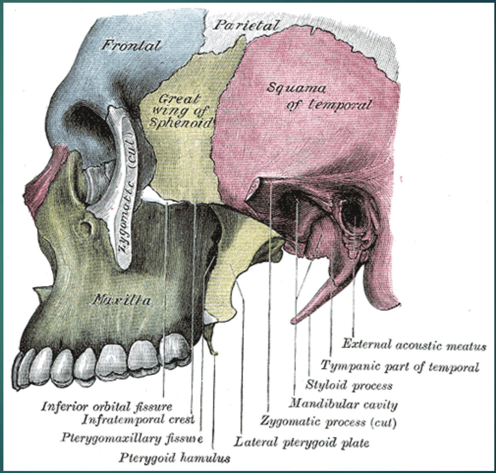 movements of the
Infratemporal Fossa
- Irregularly shaped space deep and inferior to the zygomatic arch, deep to the ramus of the mandible and posterior to the maxilla.
- Communicates with the temporal fossa through the interval between (deep to) the zygomatic arch and (superficial to) the cranial bones.
Temporal fossa is superior to the zygomatic arch, The infratemporal fossa is inferior to the zygomatic arch.
Skull - Infratemporal Fossa Exposed
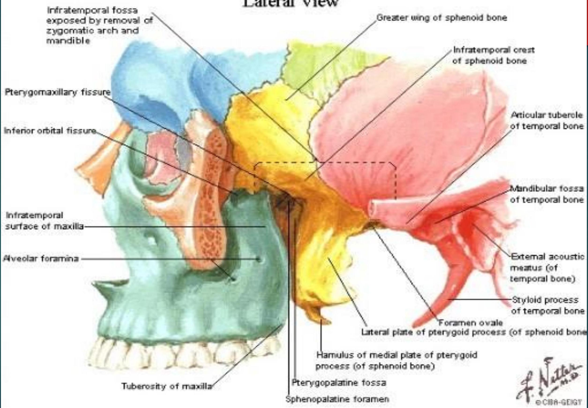
The infratemporal fossa contains the:
- Inferior part of the temporalis muscle
- Lateral and medial pterygoid muscles
- Maxillary artery
- Pterygoid venous plexus
- Mandibular, inferi tympani nerves
-
Otic ganglion
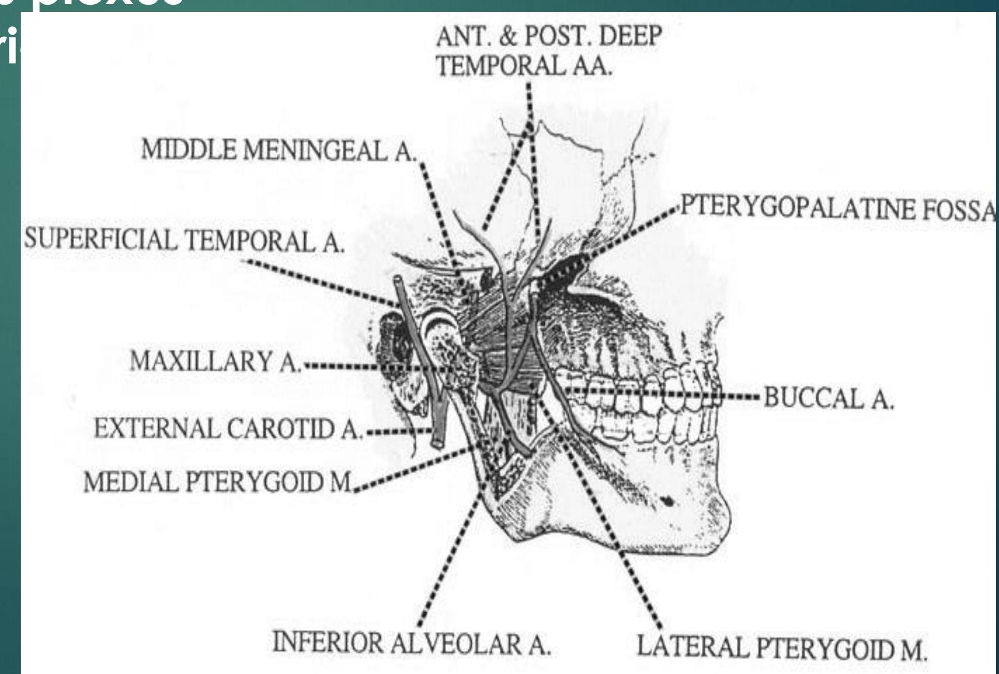
Neurovasculature of the infratemporal fossa
- The maxillary artery is the larger of the two terminal branches of the external carotid artery.
- It arises posterior to the neck of the mandible and is divided into three parts based on its relation to the lateral pterygoid muscle.
- 1st (mandibular) part: Deep to the condyle of mandible
- 2nd (pterygoid) part: Neighbourhood of lateral pterygoid muscle
- 3rd (pterygopalatine) part: Inside the infratemporal fossa (extends into the pterygopalatine fossa)
Branches of the $1^{\text {st }}$ part:
- Deep auricular (to external acoustic meatus)
- Anterior tympanic artery (to the tympanic membrane)
- Middle meningeal (to dura mater and calvaria)
- Accessory meningeal aa. (to the cranial cavity)
-
Inferior alveolar artery (to the mandibular gingiva and teeth)
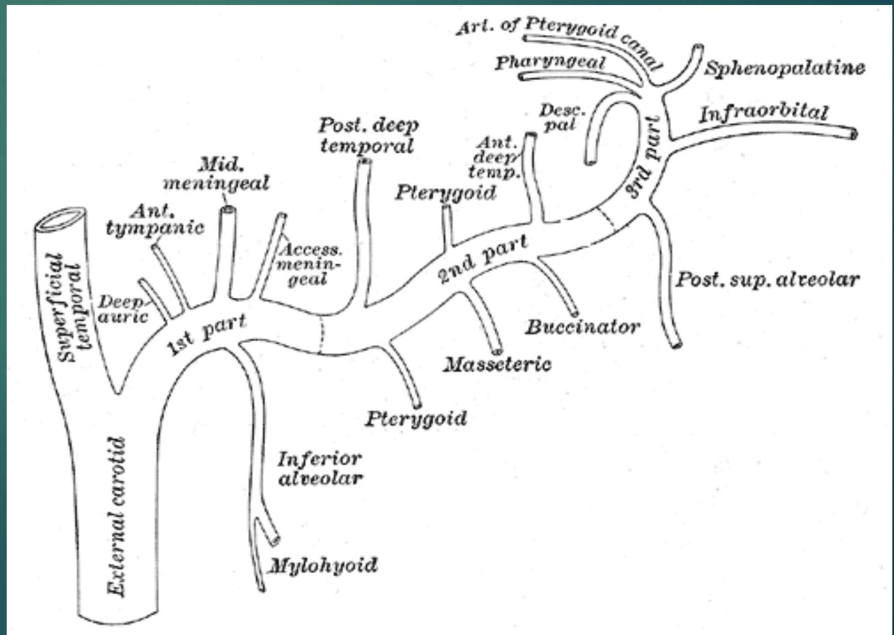
Branches of the 2nd part:
- Deep temporal aa. (to the temporal muscle)
- Pterygoid aa. (to the pterygoid muscles)
- Masseteric artery (to the masseter muscle)
-
Buccal artery (to the buccinator muscle)
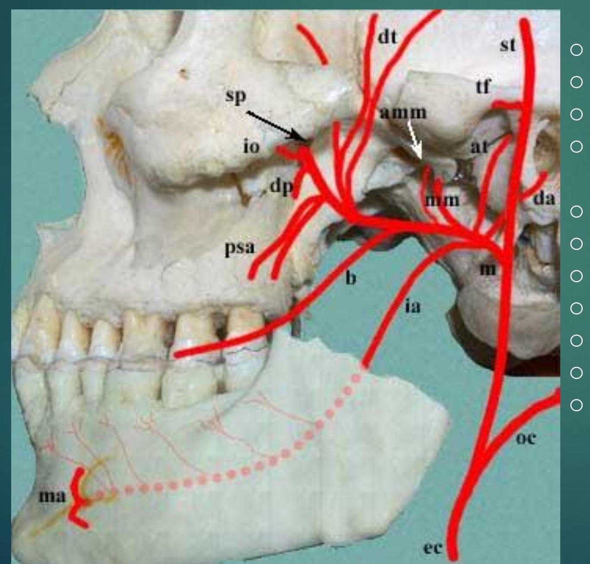
deep auricular (da)
anterior tympanic (at)
middle meningeal (mm)
accessory middle meningeal
(amm)
inferior alveolar (ia)
buccal (b)
deep temporal (dt)
posterior superior alveolar (psa)
descending palatine (dp)
infraorbital (io)
sphenopalatine (sp)
Pterygoid venous plexus
- Located partly between the temporalis and the płerygoid muscles.
- The venous equivalent of most of the maxillary
- Actually a
- network of veins
- formed by the veins
-
following the branches
> of maxillary artery.
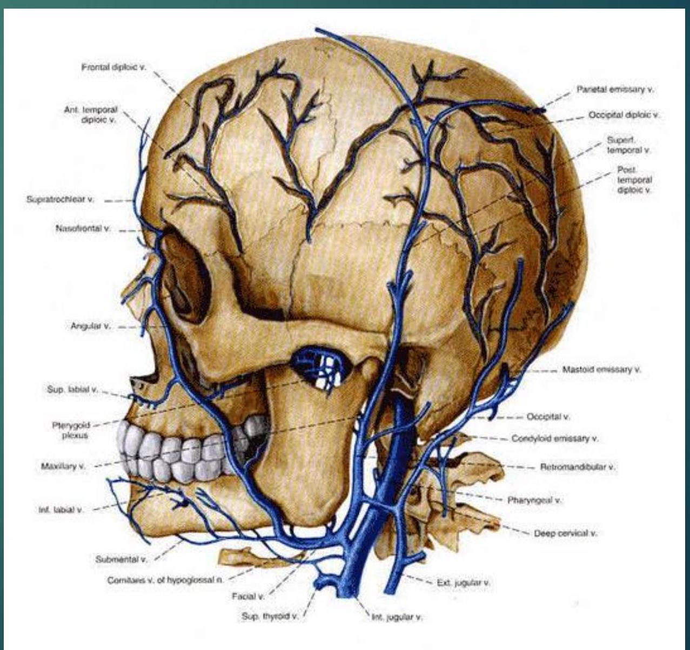
Mandibular nerve
- Arises from the trigeminal ganglion in the middle cranial fossa.
- Immediately receives the motor root of the trigeminal nerve
-
Leaves the cranium Through the foramen ovale into the infratemporal fossa.
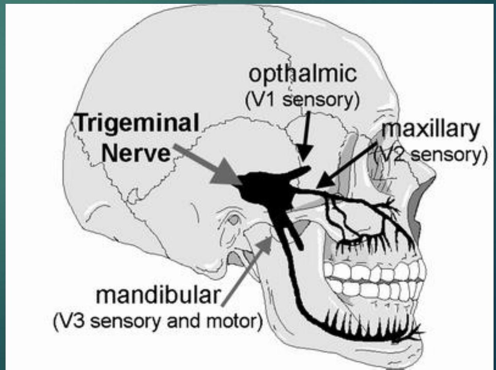
Mandibular nerve
- The mandibular nerve contains GSA and SVE fibers.
- Branches of CN V3 supply the four muscles of mastication but not the buccinator, which is supplied by the facial nerve.
Branches within the infratemporal fossa is divided int0 3 groups:
- Branches arising from the trunk
- Spinous nerve
- Medial pterygoid nerve
- Anterior branches
- Buccal nerve
- Masseteric nerve
- Deep temporal nerves
- Lateral pterygoid nerve
- Posterior branches
- Auriculotemporal nerve
- Lingual nerve
-
Inferior alveolar nerve
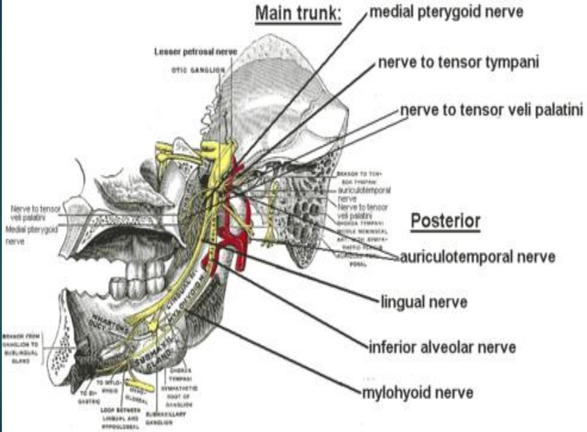
The spinous nerve passes through the spinous foramen and enters the cranium. It is a sensory nerve innervating the dura mater.
The medial pterygoid nerve innervates the medial pterygoid muscle, tensor veli palatini muscle and the tensor tympani muscle.
Buccal nerve, masseteric nerve, deep temporal nerves, lateral pterygoid nerve innervate the muscles with the same name except the buccal nerve.
Buccal nerve is sensory and innervates the inner surface of the cheek.
Auriculotemporal nerve
- Supplies sensory fibers to the auricle and temporal region.
- Also sends articular (sensory) filbers to the TMJ.
-
Conveys postsynaptic parasympathetic secretomotor fibers from the otic ganglion to the parotid gland.
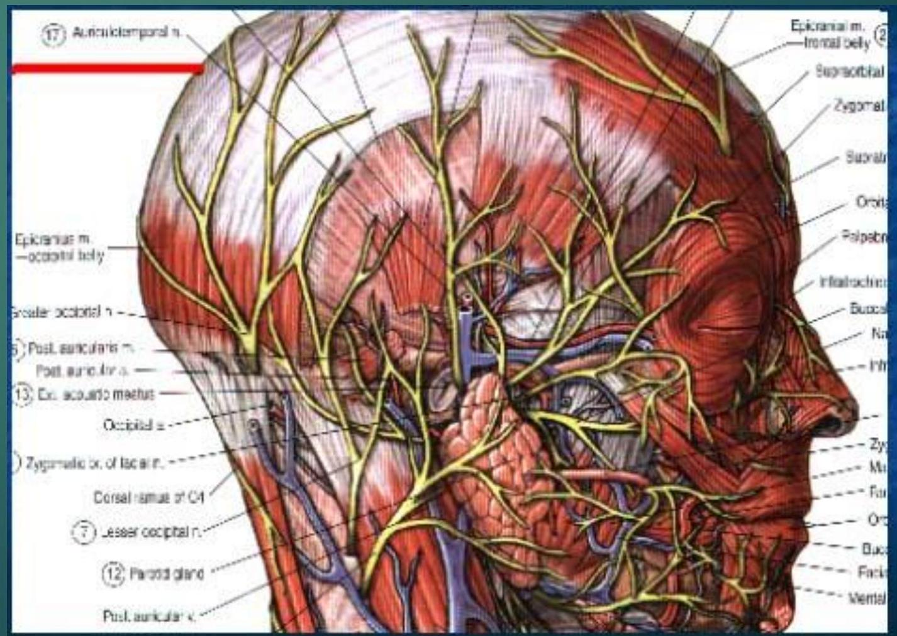
The inferior alveolar nerve
enters the mandibular foramen and passes through the mandibular canal, forming the inferior dental plexus, which sends branches to all mandibular teeth on its side.
The terminal branch of the inferior alveolar nerve is the mental nerve which passes through the mental foramen.
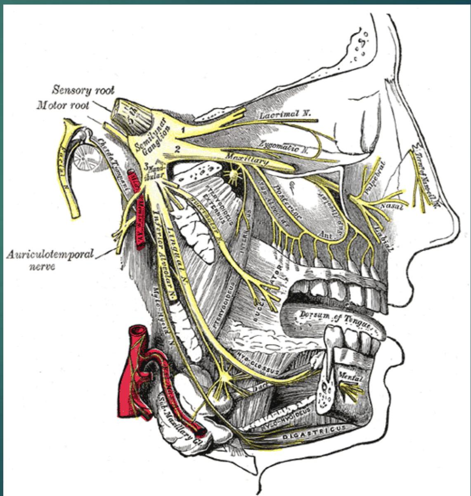
Lingual nerve
sensory to the anterior two thirds of the tongue, the floor of the mouth, and the lingual gingivae.
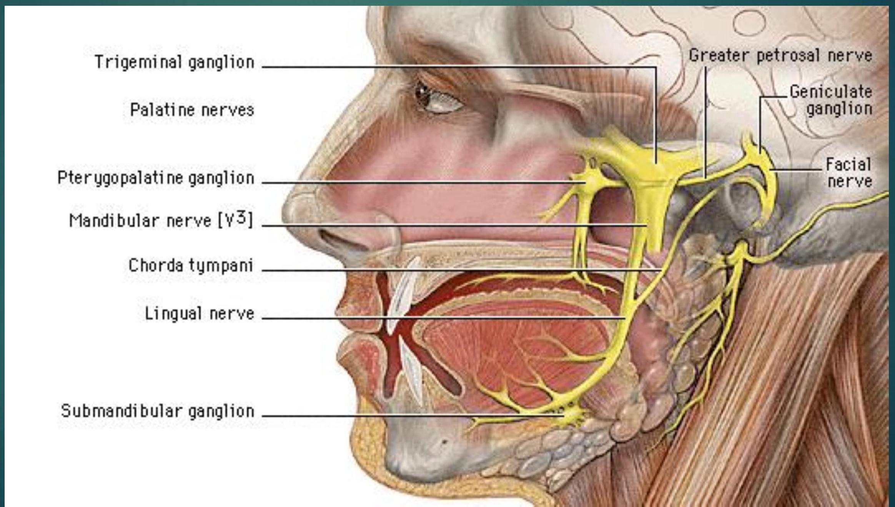
Otic ganglion (parasympathetic)
- Located in the infratemporal fossa, just inferior to the foramen ovale.
- Presynaptic parasympathetic fibers, derived mainly from the glossopharyngeal nerve (via the lesser petrosal nerve), synapse in the otic ganglion.
- Postsynaptic parasympathetic fibers, secretory to the parotid gland, pass from the otic ganglion to this gland through the auriculotemporal nerve.